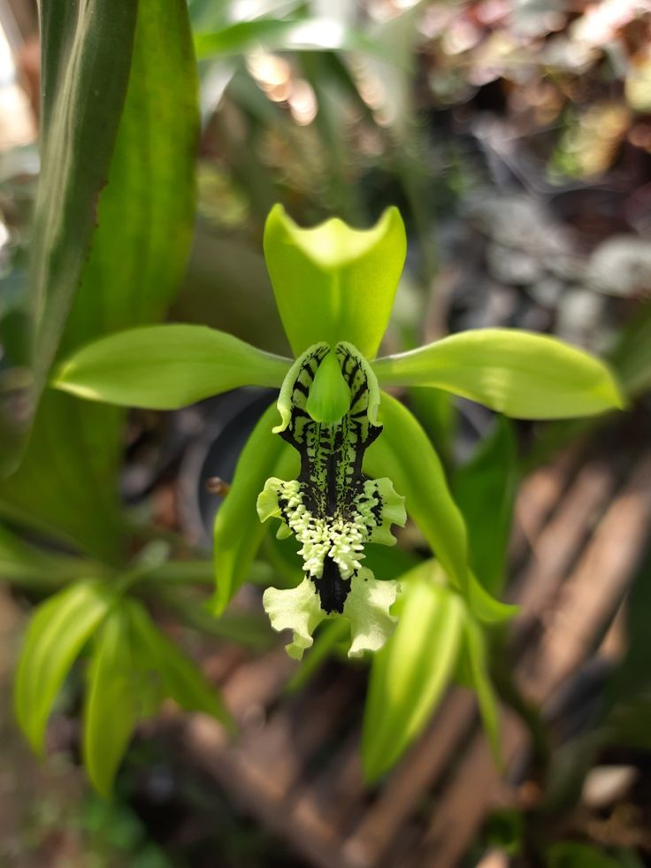
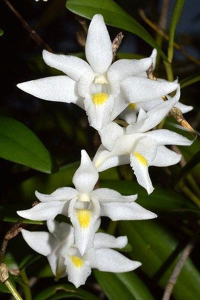
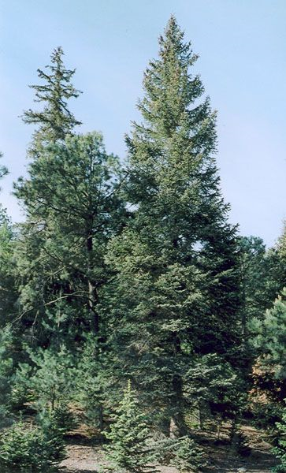
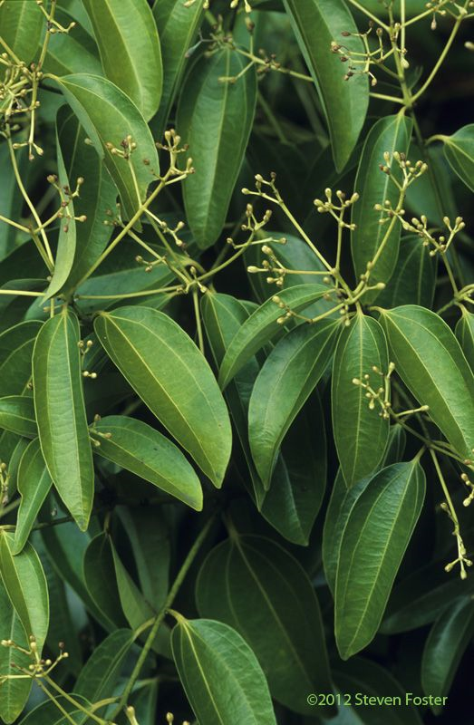
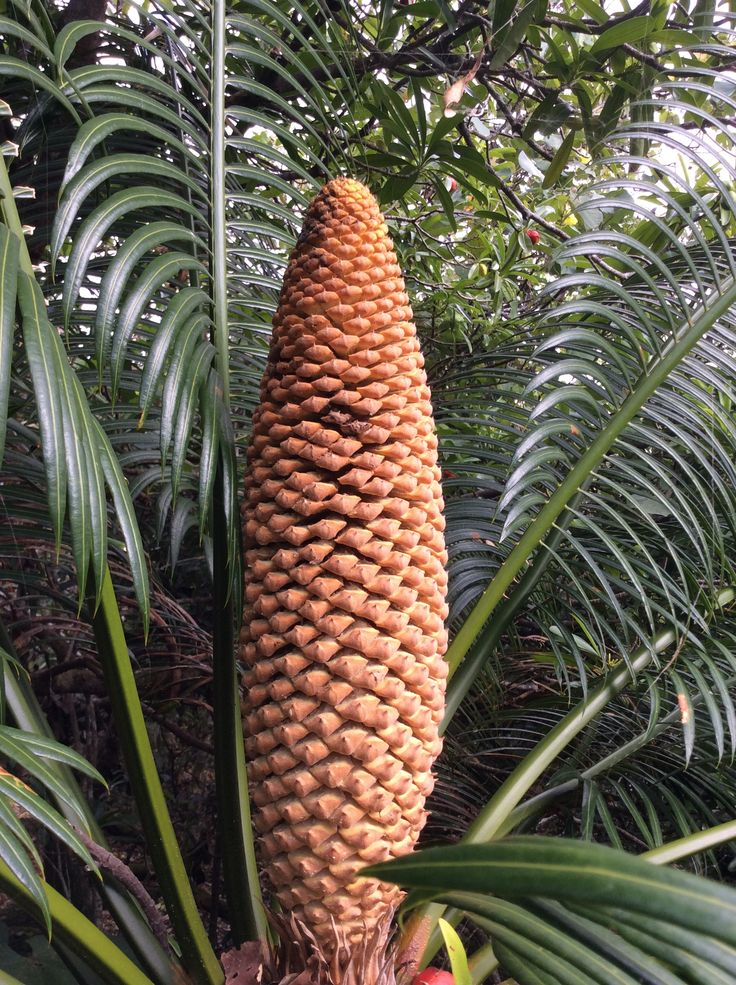
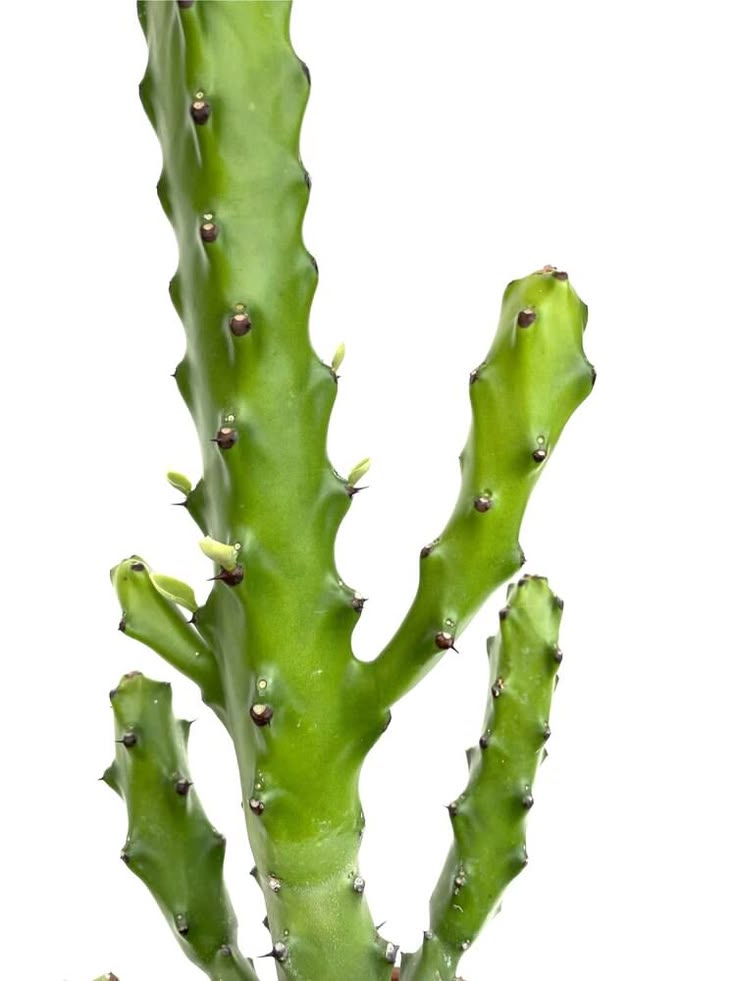

Tanaman terancam punah
Kembali
Anggrek Hitam
Anggrek Hitam (Coelogyne pandurata) adalah flora endemik langka asal Indonesia yang menjadi maskot provinsi Kalimantan Timur. Meskipun namanya "hitam", warna hitam pekat sebenarnya hanya terletak pada bagian lidah bunga (labellum), sementara kelopak bunganya didominasi warna hijau muda atau hijau kekuningan.

Dendrobium crumenatum
Dendrobium crumenatum, atau yang lebih populer dengan nama Anggrek Merpati, adalah spesies anggrek epifit yang sangat umum ditemukan di Asia Tenggara, termasuk Indonesia. Anggrek ini dijuluki "merpati" karena bentuk bunganya yang berwarna putih bersih menyerupai burung merpati yang sedang terbang.

Picea chihuahuana
Picea chihuahuana (Cemara Chihuahua) adalah spesies pohon konifera yang sangat langka dan merupakan endemik dari wilayah pegunungan di barat laut Meksiko. Pohon ini dikenal sebagai salah satu spesies cemara (spruce) paling selatan di dunia dan memegang rekor sebagai salah satu yang paling tahan panas dibandingkan jenis Picea lainnya.

Cinnamomum kanehirae
Cinnamomum kanehirae (dikenal sebagai Stout Camphor Tree atau Niu Zhang) adalah pohon hijau abadi yang sangat berharga dan endemik di Taiwan. Pohon ini sangat terkenal bukan karena produksi kampasnya (karena sebenarnya ia tidak menghasilkan kamper), melainkan sebagai inang tunggal bagi jamur medis langka, Antrodia cinnamomea.

Cycas micronesica
Cycas micronesica adalah sejenis palem yang berasal dari Kepulauan Mikronesia di Samudra Pasifik. Tumbuhan ini dikenal karena keindahannya dan perannya dalam ekosistem hutan tropis di wilayah tersebut. Cycas micronesica memiliki ciri khas daun berbentuk paku dengan panjang mencapai 1,5 hingga 3 meter.

Euphorbia mayurnathanii
Euphorbia mayurnathanii (atau sering disebut Mayurnath's Spurge) adalah spesies tanaman sukulen langka dari keluarga Euphorbiaceae yang berasal dari India. Tanaman ini memiliki status yang sangat khusus dalam konservasi karena diyakini telah punah di alam liar, meskipun masih tetap hidup melalui budidaya di berbagai belahan dunia.